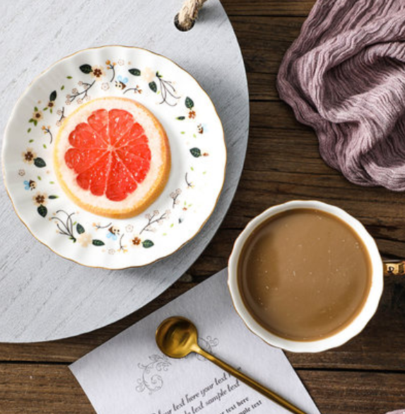
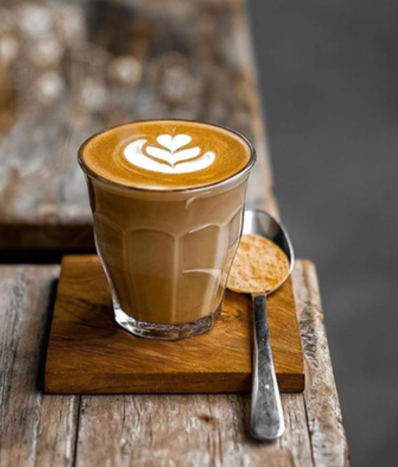

Our coffee shop
Welcome to our coffee shop, We provide you with the best quality coffee, The kindest service, The best time....
would you like to have a cup of coffee?
-

- 
- 
-

-

Smooth taste, Intriguing, Step by step selection Each one is a "good bean" Let fresh and perfect release....